Send Bulk Email to Small Groups
Here is a way to send an email to a small group from your list while keeping track of whom you have sent to and who still needs to be sent to.
How to Send Bulk Email in Small Batches
Caution: When you send email messages to a large group, it is a best practice to send in small batches -- because you are likely to be flagged as a spammer and blocked by your ISP.
1. Create Your Email List
-
In the Contacts file, Click the Find button to search for the customers you wish to email. Be sure to include an asterisk * in the Email address field.
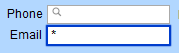
-
Click the Perform Find button.
-
Once you have found your group, count how many customers are on the list. Click the List View button (top center) and find the number of records in the top left corner under To Do List button, e.g. 1 of 245
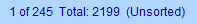
-
Determine how many customers will be in a batch, e.g. 20.
2. Create a Small Group (or Batch)
-
In the Contacts file, switch to List View.
-
Click on the name of a contact listed 10 or 20 names down on the list.
-
When you click on a contact's first or last name, then you will be able to see which record # you are on in the found set, e.g. 17 of 245
-
Use the yellow arrow buttons to move back or forward until you reach your batch size, e.g. 20.
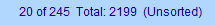
-
In the top menu bar, choose Perform > Omit Multiple...
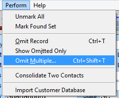
-
A dialog box appears.
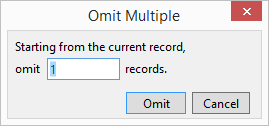
-
In the dialog box, enter 9999 and click Omit.
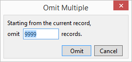
Omitting the lower portion of your list simply take them off this list. Omit is not the same as Delete.
-
Because you asked FrameReady to omit more records than are available, FrameReady alerts you to the correct number that can be omitted.
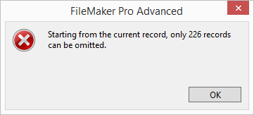
-
Click OK.
-
The correct number is automatically added to the Omit field.
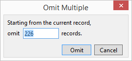
-
Click Omit. You now have the first batch of customers.
3. Add a Note to this Batch of Customers
-
Still in the Contacts file, switch to Form View and open the Date/Notes tab.
-
Click the Add Notes to all records in the Found Set button (right).
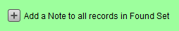
-
The Add Note to Found Set dialog box appears.
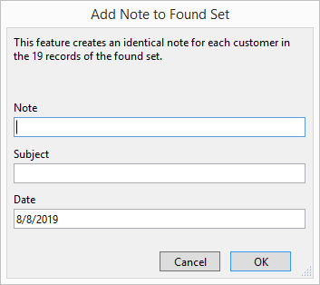
-
In the Note field, enter in a note to describe this mailing, e.g. Email Spring Sale and, optionally, add a Subject. Click OK.
The same note is added to all the records in this list.
4. Send an Email to the Batch
-
Still in the Contacts file, switch to Form View.
-
Click the Send button (located beside the Email Address field).
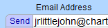
-
A message dialog box appears.
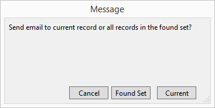
-
Click the Found Set button.
-
If you have set FrameReady to use Client, then your computer's default email program opens and a new email is created with all the names in the Bcc: field.
-
If the addresses are not in the Bcc: field, then click in the To: field and press Control + A (Windows) or Command + A (Mac). This will highlight all the names. Drag the names into the Bcc: field (this field hides the email addresses of the people to whom you are mailing).
-
If you have set FrameReady to use SMPT, then FrameReady creates a new email with all the names in the Bcc: field.
-
Enter your company’s email address in the To: field.
-
Add a Subject.
-
Compose your message and click Send.
4. Create the Next Batch
Essentially, we're going to do the first search again, but this time exclude the records that we've already sent.
-
Still in the Contacts file, click the Find button and add the same find criteria as before. Be sure to include an asterisk * in the Email address field.
But do not click Perform Find just yet. -
Click the Add New Request button.
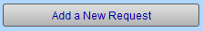
-
The find screen clears and is ready for a new find request. In the FileMaker toolbar, click Omit.
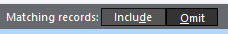
Note how this request is the 2nd Find Request.
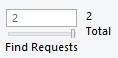
-
In the Notes field, enter the exact, previously entered note, e.g. Email Spring Sale
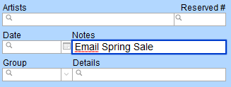
-
Click the Perform Find button.
-
You now have a list of contacts, with email addresses, to whom you have not sent the current email message.
REPEAT STEPS 2 TO 5 UNTIL NO RECORDS MATCH YOUR FIND REQUEST.
If the list is already short enough, then move to step 3.
© 2023 Adatasol, Inc.